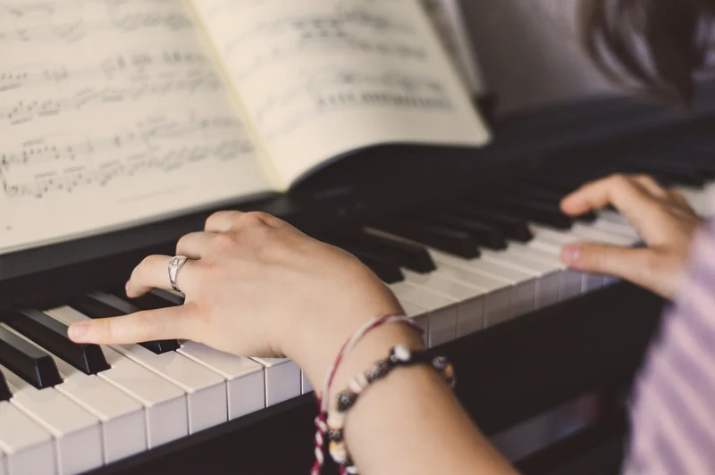
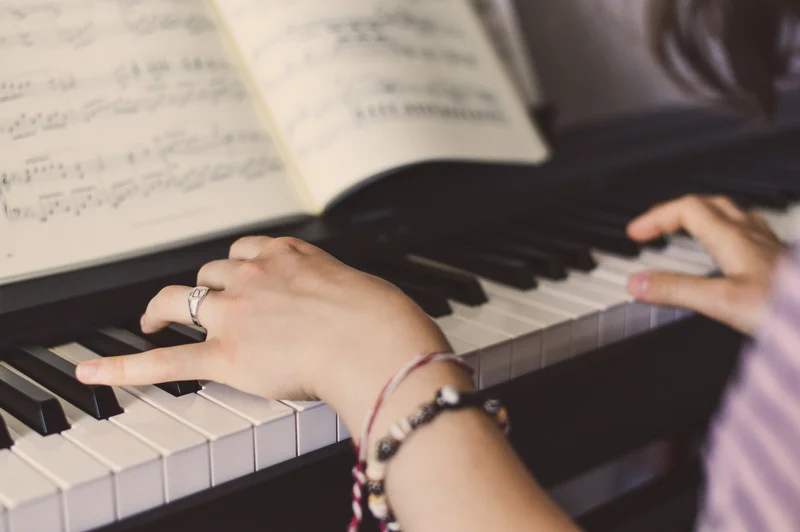

My Story:
I learned piano from my mom who has taught beginner piano out of our house since I was little. I am so grateful for her example and for teaching my sisters and I because music is a big part of who I am today. I finished the course my mom taught and that I plan on teaching as well, and learned from there. My continuing development comes from playing in ward sacrament and playing for the ward choir.My Purpose:
My goal is to give individuals, parents and children an opportunity to learn beginner music thoery and how to read simple sheet music at a low cost. This way, if you or your child find out that they are not interested in learning piano, not much has been spent in providing lessons, and your child can decide to no longer take lessons at any time. If you or your child decide to continue learning piano, you have a basic understanding of reading sheet music and can either continue to teach yourself from then on like I did, or take more advanced lessons from a professional and already have the discipline and understanding to keep going. By learning piano, you learn many different life skills at a young age including patience, dedication, persistance, math skills, reading skills, and develop many other learning advantages that benefit you for the rest of your life. 



"“Music has boundless powers for moving families toward greater spirituality and devotion to the gospel. Latter-day Saints should fill their homes with the sound of worthy music.”
-- “First Presidency Preface,” Hymns, 1985"
""We are in a position, as musicians, to touch the souls of those who listen."
--President Spencer W. Kimball, Teachings of Spencer W. Kimball (1982), 520"
"“Music can set an atmosphere of worship which invites [the] spirit of revelation, of testimony.”
-- President Boyd K. Packer, Ensign, Nov. 1991, 22"